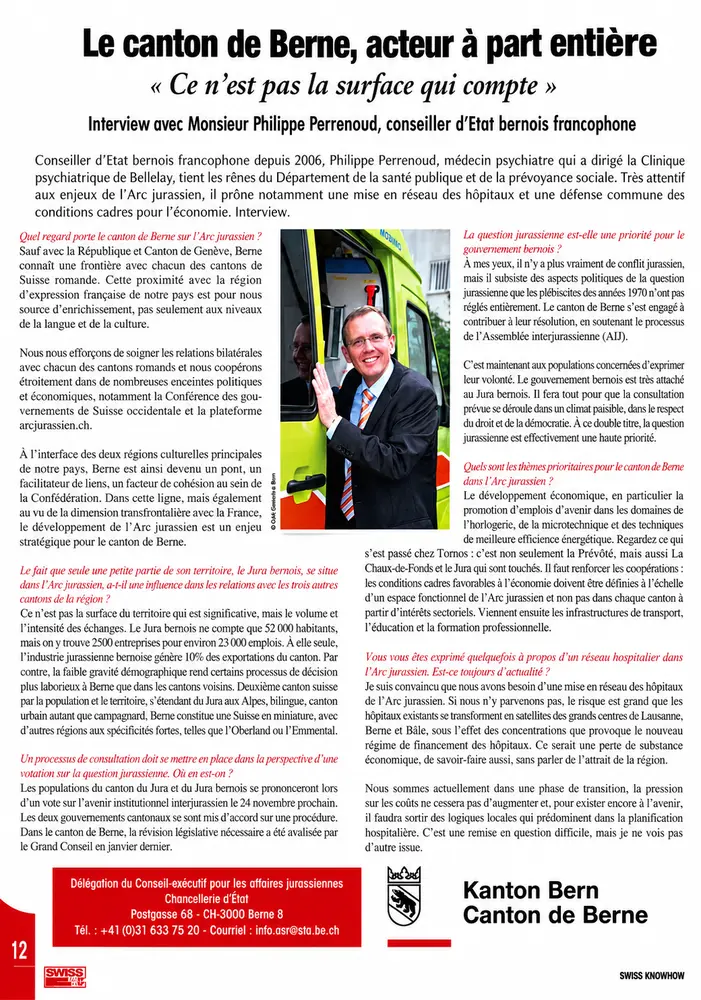

Présentation
Délégation du gouvernement bernois chargée des affaires jurassiennes, rattachée à la Chancellerie d'État. Elle suit notamment le processus de l'Assemblée interjurassienne et le vote sur l'avenir institutionnel du Jura bernois.

Administration cantonale
Délégation du gouvernement bernois chargée des affaires jurassiennes, rattachée à la Chancellerie d'État. Elle suit notamment le processus de l'Assemblée interjurassienne et le vote sur l'avenir institutionnel du Jura bernois.
Recrutement et placement de personnel
Association faîtière des énergies renouvelables et de l’efficacité énergétique
Administration cantonale – immeubles et constructions
Implants et instruments de chirurgie orthopédique